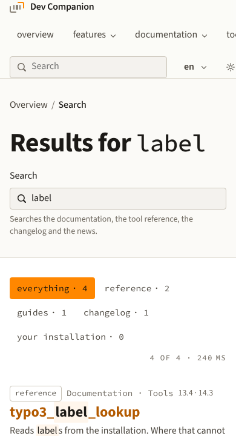
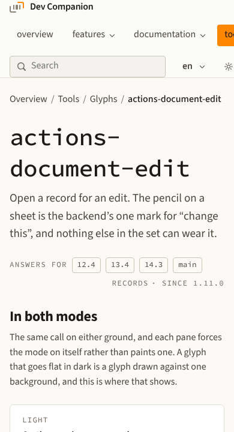
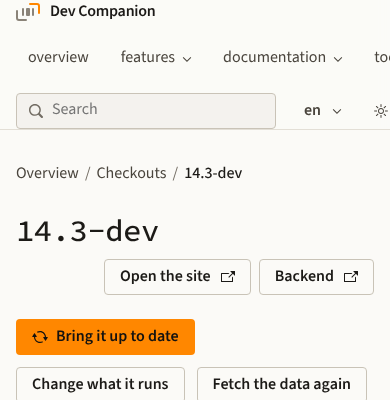

03 · How to build a slide
Three pages at hand
Search

The filters count the hits, and the first one names where it comes from.
Glyph

The name at the top, and the versions that carry it under the sentence.
Checkout

The one thing to do next is the only orange button.
10